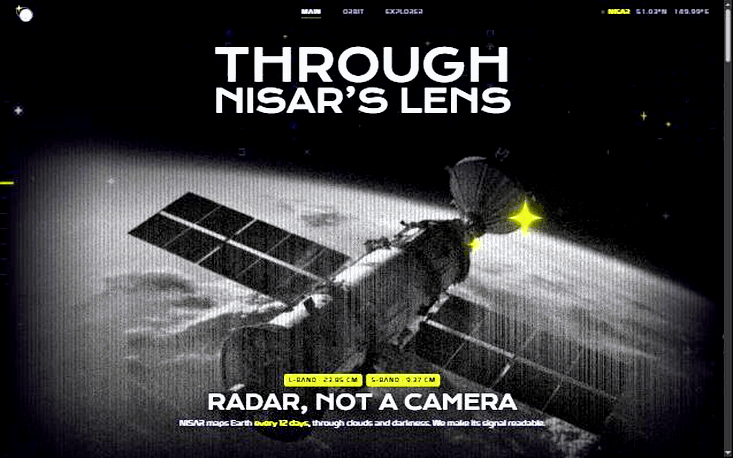
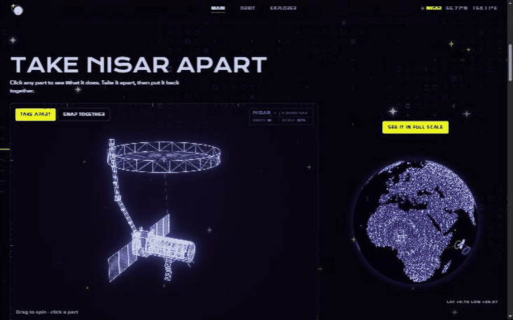
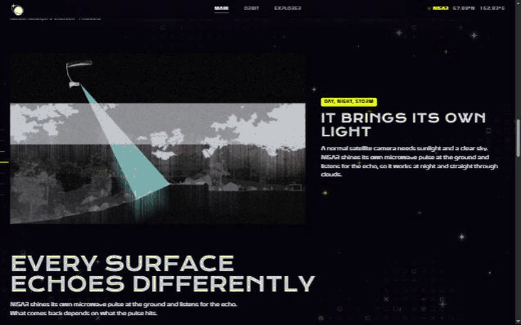
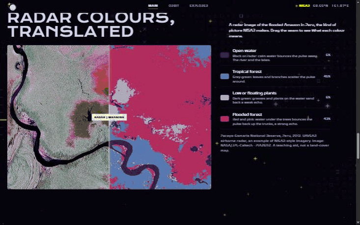
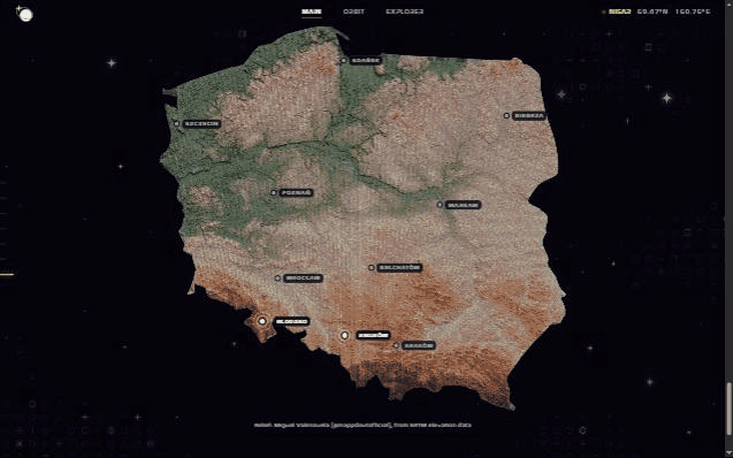
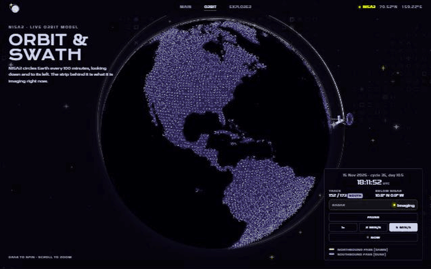
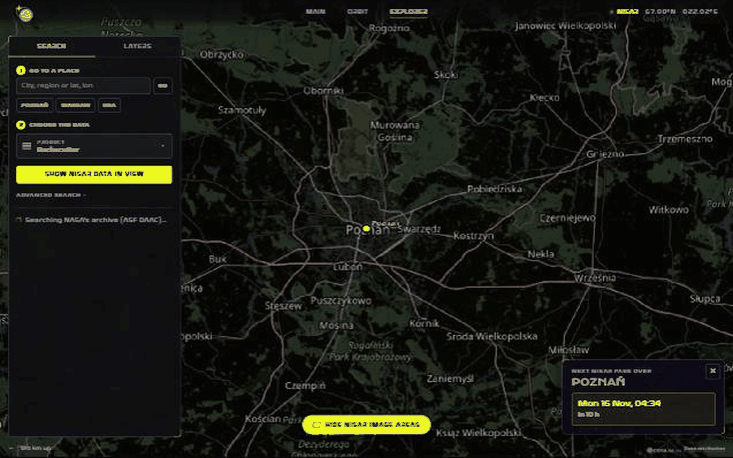

NASA Space Apps 2026 · Poznań
Challenge: Dancing with the Sars
NISAR’s radar, made readable for anyone. Built entirely on open NASA and space-agency data.
Hand-drawn · deeply researched
team holy@hack:~$
Alina Zhydkova · Obada Alabbadi · Omar Hemid · Shady Hemid · Zeyad Al-Najjar

Main page · 01

You learn the satellite by playing with it.
Open data: NASA/JPL spacecraft drawings and specs
Main page · 02

Physics without formulas, drawn by hand.
Open data: NISAR’s L- and S-band specs, NASA and ISRO
Main page · 03

Drag the seam: radar on one side, meaning on the other.
Open data: NASA image PIA26112 and its colour legend
Main page · 04

Pick a pin, scroll a researched story sideways.
Open data: NISAR radar, Polish archive maps, aerial photos and laser-scanned terrain
Orbit page

See where NISAR is right now.
Open data: NASA’s NISAR orbit data
Explorer page

Search NASA’s real NISAR archive on a 3D globe.
Open data: NASA archive at the Alaska Satellite Facility, NISAR observation plan